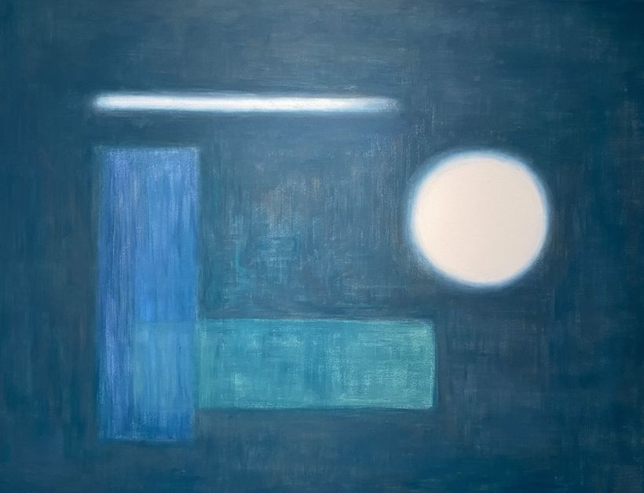

The series follows how human perceptual agency is quietly handed over to the blind structures of algorithms. Questions, feelings and moments of decision become data that trains the system; the paintings do not illustrate that exchange, they stay where it happens.
A circle is the vessel of thought and perception. A rectangle is the screen that receives it, and at the same time the structure that absorbs our data. The line between the two is not a road that runs both ways; it marks the direction the handover takes.
The series began in February 2026 and ran through November. Twenty-three works have come out of it; the first two stay in the studio and are not reproduced.
Consigned Consciousness – 14, 2026. Oil pastel on paper, 38 × 54 cmConsigned Consciousness – 19 (Metro), 2026. Oil pastel on paper, 38 × 54 cm
Series II
Tremors of Countless ParticlesA Journey Toward the Reason for Existence
2023 — 2024 · 7 works
The work began with one question: why do we exist at all. Everything from the cosmos to the objects in front of me, myself included, is an assemblage of particles in constant vibration — and that fact still does not answer the question.
Rubbing oil pastel, layering colour and blurring boundaries is not image-making. It is a way of showing the particles beyond fixed form, and an attempt to come one step closer to an essence we can never fully perceive. In a world where the empty outweighs the filled, what can we define ourselves by.
A Garden of Toned Emotions, 2023. Oil pastel on paper, 130 × 162 cm

Filling, Emptying, 2023. Oil pastel on paper, 91 × 117 cm
Series III
FrameWe Are Always Confined
2026 · 1 work
The frame itself is never seen. We know it only through the contours it leaves on the surface. The structure stays hidden; it is read only in the form it makes visible.
Divide the compartments of one plane further and each rectangle becomes a universe of its own. Each has its own size, its own edge.
We believe we can go anywhere, freely. In the end we are inside that universe, inside a frame whose true form we cannot see.
Not every painting belongs to a series. Through 2026, frames, supports, timelines and single eyes were painted beside Consigned Consciousness, each with its own title and date.
A Self-Similar World, 2026Eyes Holding a Green Mist, 2026A Waiting, Leaning and Set Upright, 2026Frame, 2026